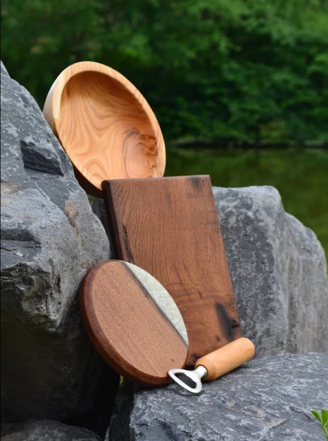
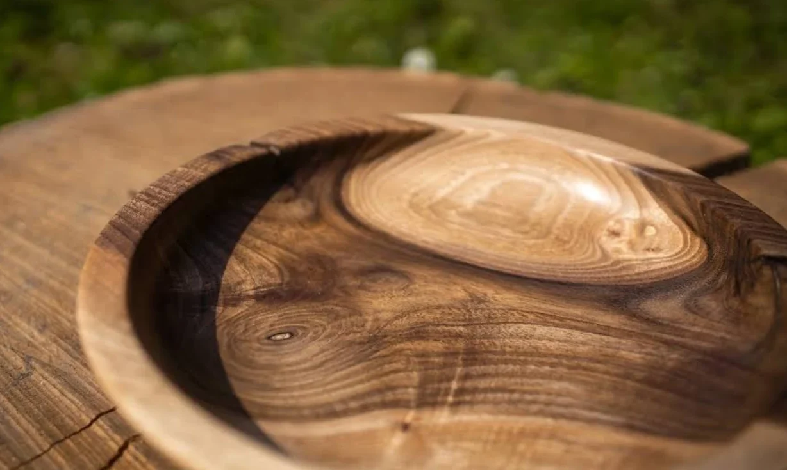
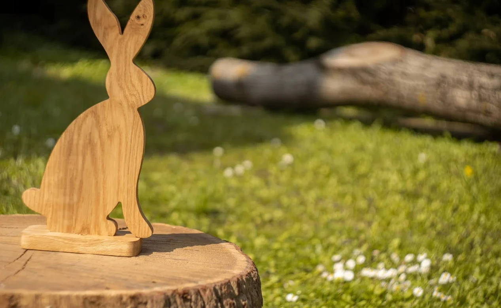
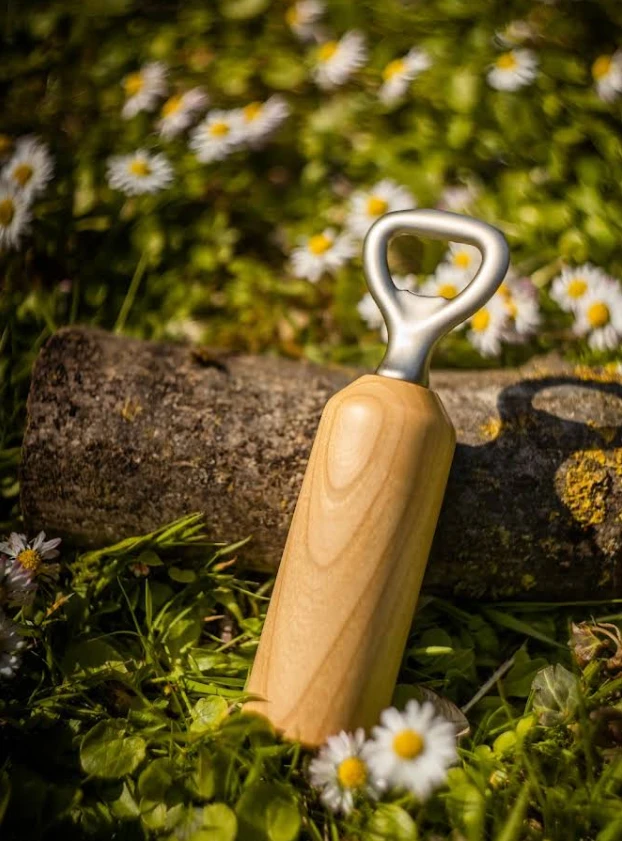
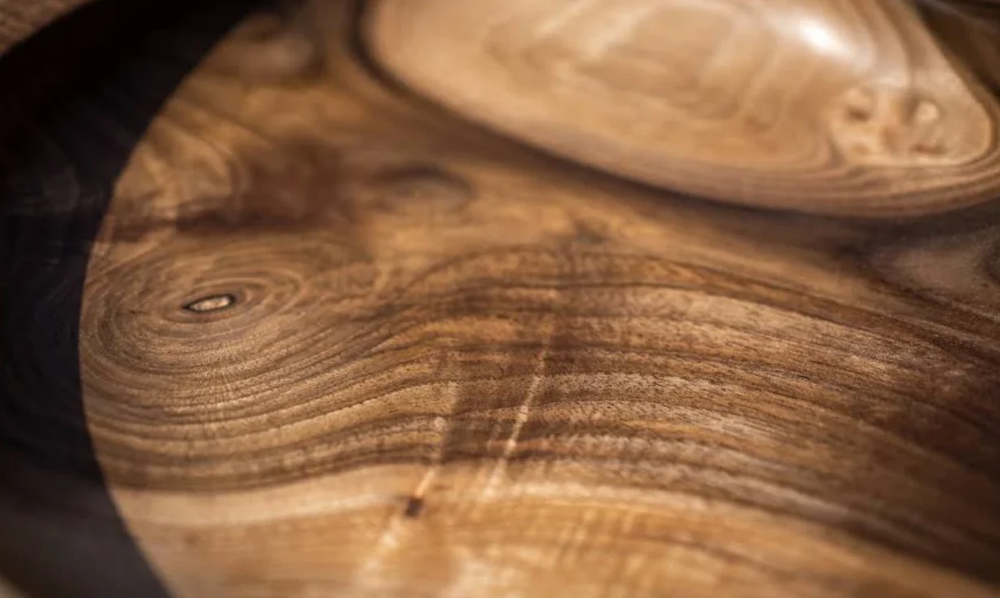

Die Kollektion
Schalen, Bretter und Untersetzer – gemacht, um benutzt zu werden.
Handgedrechselt im Odenwald
Schalen, Bretter und kleine Alltagsbegleiter – von Hand gefertigt aus heimischem und altem Holz. Jedes Stück ein Unikat, mit seiner eigenen Maserung und Geschichte.

Jedes Stück wird einzeln gedrechselt, geschliffen und geölt.
Nussbaum, Eiche, Kirsche – oft mit Vorgeschichte.
Kleine Stückzahlen, langlebig gemacht für den Alltag.
Arbeiten
Eine Auswahl dessen, was zuletzt entstanden ist. Viele Stücke sind im Shop erhältlich, andere auf Anfrage.

Schalen, Bretter und Untersetzer – gemacht, um benutzt zu werden.
Aus Nussbaum und Kirsche, jede Maserung einzigartig.

Saisonale Figuren aus massiver Eiche, wie unser Osterhase.

Gedrechselter Holzgriff, gebürsteter Edelstahl. Ein Geschenk, das bleibt.

Werkstatt
Bei DriesWoodworks entsteht alles an der Drechselbank – aus Holz, das sonst im Ofen gelandet wäre, aus alten Balken oder aus heimischen Bäumen. Wir lassen der Maserung ihren Raum: Astlöcher, Risse und Farbspiele sind gewollt.
Veredelt wird mit lebensmittelechten Ölen, damit Schalen und Bretter täglich genutzt werden können.
Stimmen
„Wunderschöne Alltagsgegenstände aus kunstvoll gedrechseltem (Alt-)Holz. Ich liebe die wunderbaren Holzschälchen!“
„Hier geht Qualität vor Masse!“
„Top Qualität, top Produkte.“
Kontakt
Stöbern Sie im Shop oder fragen Sie eine individuelle Anfertigung an. Wir melden uns persönlich.